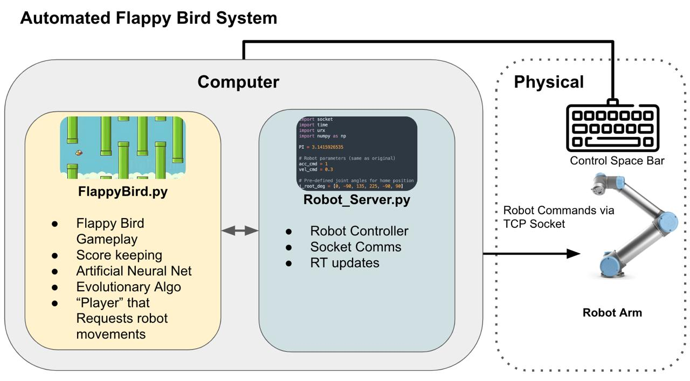
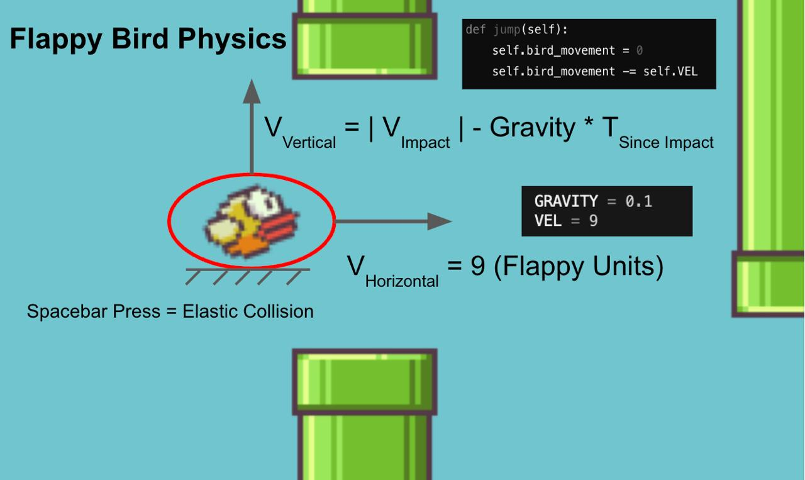
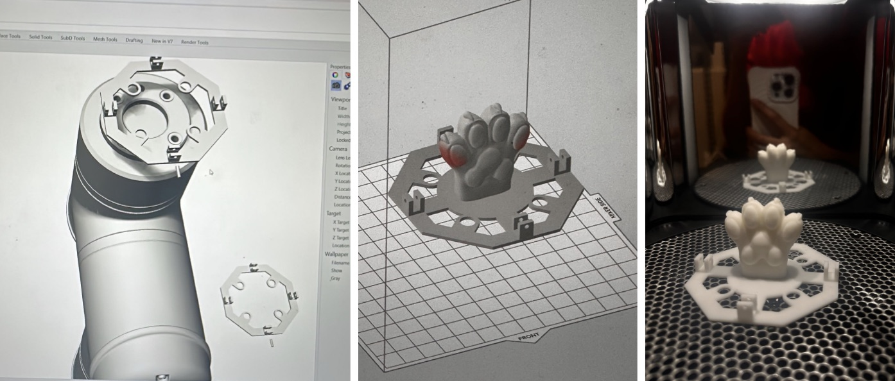

Flappy Bird AI
Evolutionary neural network · Pygame · Robot arm integration

An evolutionary neural network that learns to play Flappy Bird in Pygame. The project started as a standalone AI experiment in 2021 and was later extended during MAS.863 — How to Make (Almost) Anything (2024) at MIT, where the same game logic was connected to a UR robot arm that physically pressed the space bar.
How It Works
Each bird is controlled by a feedforward neural network with four inputs — bird height, pipe horizontal position, bottom pipe height, and top pipe height — and one output that decides whether to flap. A population of birds is evolved over many generations using tournament selection, crossover, and mutation until the best network survives the longest.


Robot Arm Integration
During Wildcard Week at MIT, the project was expanded into a group assignment with the CBA team. The goal: build the best Flappy Bird player in the world — using a real robot.
Hye Jun Youn designed a 3D-printed robotic paw attached to a UR arm. The game and robot ran as two separate programs connected over TCP sockets: the Pygame client sent MOVE_UP and MOVE_DOWN commands, and a Python server on the robot side translated those into linear end-effector moves that pressed and released the keyboard.

Key challenges included robot path planning, optimizing press distance versus timing delays, and server lag between the game loop and robot communication. Running the game and robot as separate processes helped keep synchronization stable.
Team (HTMAA 2024 Wildcard Week)
- Marcello Tania — evolutionary neural network and game implementation
- Hye Jun Youn — robotic paw design and documentation
- Michelle Kim — system integration and path planning
- Jonny Cohen — system integration and robot–server communication
- Alex Kyaw — TA support and robot safety training